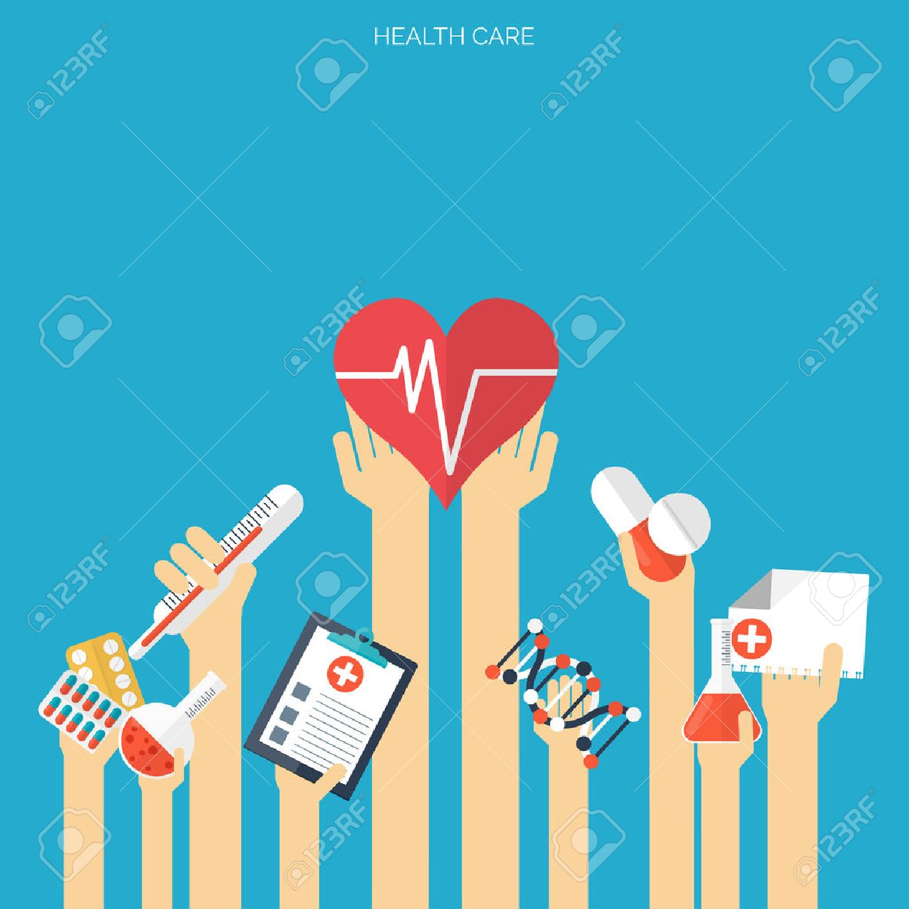
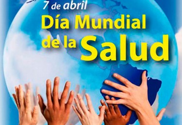

Que es lo que NO incluyre la Cobertuda Sanitaria Universal

- La CSU no implica la cobertura gratuita de todas las intervenciones sanitarias posibles, independientemente de su costo, ya que ningún país puede permitirse ofrecer todos los servicios gratuitamente de forma sostenible.
- La CSU no se refiere únicamente a la financiación de la salud: abarca todos los componentes del sistema de salud, a saber, los sistemas de prestación de servicios de salud, el personal sanitario, las instalaciones sanitarias o las redes de comunicación, las tecnologías sanitarias, los sistemas de información, los mecanismos de garantía de la calidad, la gobernanza y la legislación.
- La CSU no solo tiene por finalidad asegurar un conjunto de servicios de salud mínimos, sino también lograr la ampliación progresiva de la cobertura de los servicios de salud y de la protección financiera, conforme se disponga de más recursos.
- La CSU no solo engloba los servicios de tratamiento específicos, sino también incluye los servicios a la población como las campañas de salud pública, la adición de flúor al agua, el control de los lugares de reproducción de los mosquitos, entre otros.
- La CSU comprende mucho más que solo la salud. Adoptar medidas para alcanzar la cobertura sanitaria universal equivale a adoptar medidas para lograr la equidad, las prioridades en materia de desarrollo y la inclusión y cohesión sociales.

Dia Muldial de la Salud
Jacqueline Orzuna Cortes